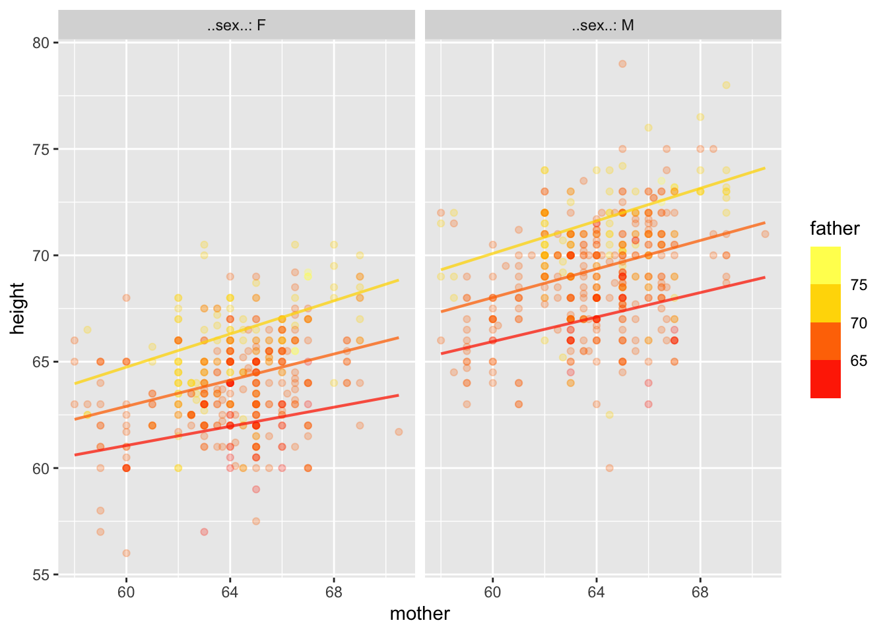
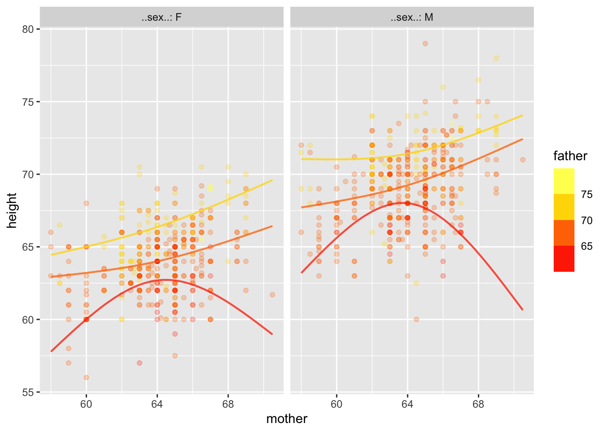

Galton |> model_train(height ~ mother + father + sex)
Call:
lm(formula = tilde, data = data)
Coefficients:
(Intercept) mother father sexM
15.3448 0.3215 0.4060 5.2260 Math300Z
Daniel Kaplan
February 28, 2023
Here are some fundamentals:
response ~ explan1 + explain2 + ...1.lm() as the engine for turning (a) and (b) into coefficients.
Call:
lm(formula = tilde, data = data)
Coefficients:
(Intercept) mother father sexM
15.3448 0.3215 0.4060 5.2260 sex, call it sexM, and give formula =(E2="M") + 0.)Output is placed in new sheet. In the Galton example, the coefficients are only slightly wrong, pretty good for Excel. (The linear algebra routines in the “Analysis Toolpack” are not state of the art. Probably they use “pseudo-inverses.”)
conf_interval() or R2().# A tibble: 4 × 4
term .lwr .coef .upr
<chr> <dbl> <dbl> <dbl>
1 (Intercept) 9.95 15.3 20.7
2 mother 0.260 0.321 0.383
3 father 0.349 0.406 0.463
4 sexM 4.94 5.23 5.51 mother and father here) you don’t have a good basis to claim that they are different.An important statistical task (in some situations) is to detect whether there is some connection between an explanatory variable and the response variable. This often amounts to asking whether a coefficient is zero. More precisely, asking whether the confidence interval includes zero.
Mathematical tradition. There are other ways to present the same information. But people with a good head for mathematics find the coefficients easy to interpret … until the models become complicated.
Here’s a way to plot out the Galton model:
mother father sex .output .lwr .upr
1 60 65 F 61.02304 56.77622 65.26986
2 65 65 F 62.63052 58.38981 66.87122This is called an “effect size.” From the above table, we can calculate the effect size with respect to mother.
An effect size (for numerical variables) is a partial derivative of the model function.
An effect size (for categorical variables) is a partial difference.
Whether a model’s effect size says what would happen in the real world if we changed a model input depends on whether we have captured causal connections properly with our model.
We can’t change the explanatory variables in a meaningful way in human height, but suppose the experiment were to make kindergarten class sizes smaller and look for the effect on later student achievement.
Calculate an effect size: use model_eval() changing one variable at a time.
Calculating confidence interval on effect size: Involves a lot of accounting, except in the simplest cases.
Units of effect size.
+ in model specificationsThis is just for us, to make model interpretation easier.
With + models, the coefficient is always the same as the effect size.
But not generally. Examples with Galton data
Warning: Ignoring unknown aesthetics: fill
Notice that the lines aren’t parallel. We can also do curvy functions.
Warning: Ignoring unknown aesthetics: fill
Might the curviness or non-parallel nature of the lines just be a matter of sampling variation?
All the information for the confidence bands is contained in the coefficients (and residuals), but good luck figuring it out!
# A tibble: 18 × 4
term .lwr .coef .upr
<chr> <dbl> <dbl> <dbl>
1 (Intercept) 50.1 55.4 60.7
2 ns(mother, 2)1 1.01 10.7 20.5
3 ns(mother, 2)2 -13.0 -4.36 4.31
4 ns(father, 2)1 4.97 15.4 25.9
5 ns(father, 2)2 -0.486 4.98 10.5
6 sexM -1.19 6.00 13.2
7 ns(mother, 2)1:ns(father, 2)1 -32.1 -12.8 6.55
8 ns(mother, 2)2:ns(father, 2)1 -1.03 15.1 31.3
9 ns(mother, 2)1:ns(father, 2)2 -8.41 2.27 12.9
10 ns(mother, 2)2:ns(father, 2)2 -3.90 4.43 12.8
11 ns(mother, 2)1:sexM -17.3 -3.92 9.43
12 ns(mother, 2)2:sexM -19.7 -6.97 5.72
13 ns(father, 2)1:sexM -15.0 -0.854 13.3
14 ns(father, 2)2:sexM -4.29 3.48 11.3
15 ns(mother, 2)1:ns(father, 2)1:sexM -20.2 6.10 32.4
16 ns(mother, 2)2:ns(father, 2)1:sexM -10.1 13.2 36.5
17 ns(mother, 2)1:ns(father, 2)2:sexM -23.4 -8.08 7.25
18 ns(mother, 2)2:ns(father, 2)2:sexM -15.8 -2.90 9.97Statisticians keep in mind this folk wisdom:
If you try to capture too much detail in the relationship, you won’t capture anything.
Notice that all but three of the terms have confidence intervals that include zero.